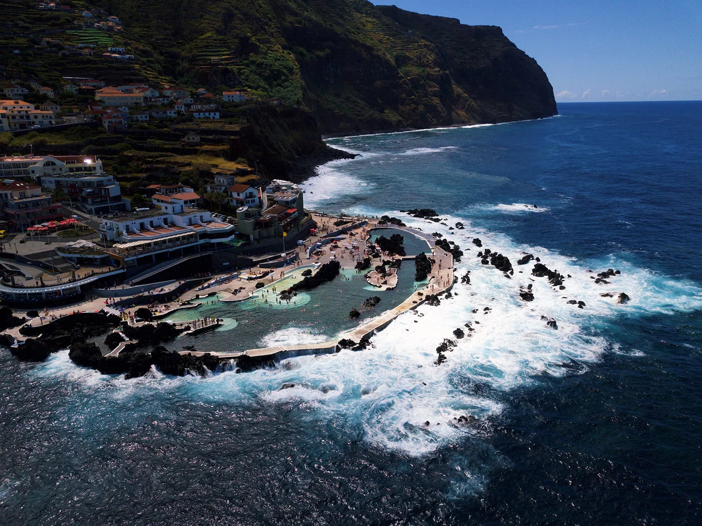

הבריכות הטבעיות הוולקניות של האי מדיירה - פורטוגל
|
העיירה פורטו מוניז (Porto Moniz), השוכנת בקצה הצפון-מערבי של האי מדיירה שבפורטוגל, מפורסמת בעולם בזכות הבריכות הטבעיות הוולקניות שלה, המהוות פלא גיאולוגי עוצר נשימה. הבריכות נוצרו לאורך מיליוני שנים כתוצאה מהתקררות לבה רותחת במגע עם מי האוקיינוס האטלנטי, מה שיצר בריכות שחייה טבעיות התחומות בסלעי בזלת שחורים ומרשימים. מי המלח הצלולים של האוקיינוס מתחדשים ללא הרף עם תנועת הגלים והגאות, ומציעים חוויית רחצה ייחודית בטמפרטורה נעימה יחסית ובביטחון מלא מפני זרמי הים העזים. השילוב בין המים הכחולים והשקופים לבין סלעי הלבה הכהים והנוף הפראי של מדיירה הופך את פורטו מוניז לאחד היעדים המרהיבים והבלתי נשכחים ביותר עבור חובבי טבע ונופש כאחד. |
 |